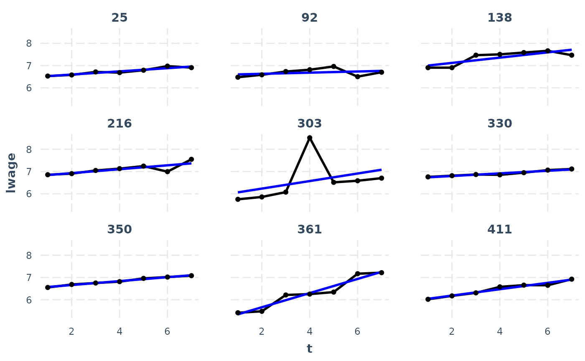

line_plot allows for flexible visualization of repeated
measures variables from panel_data frames.
line_plot(
data,
var,
id = NULL,
wave = NULL,
overlay = TRUE,
show.points = TRUE,
subset.ids = FALSE,
n.random.subset = 9,
add.mean = FALSE,
mean.function = "lm",
line.size = 1,
alpha = if (overlay) 0.5 else 1
)Either a panel_data frame or another data frame.
The unquoted name of the variable of interest.
If data is not a panel_data object, then the id variable.
If data is not a panel_data object, then the wave variable.
Should the lines be plotted in the same panel or each in their own facet/panel? Default is TRUE, meaning they are plotted in the same panel.
Plot a point at each wave? Default is TRUE.
Plot only a subset of the entities' lines? Default is NULL,
meaning plot all ids. If TRUE, a random subset (the number defined by
n.random.subset) are plotted. You may also supply a vector of ids to
choose them yourself.
How many entities to randomly sample when subset.ids
is TRUE.
Add a line representing the mean trend? Default is FALSE.
Cannot be combined with overlay.
The mean function to supply to geom_smooth when
add.mean is TRUE. Default is "lm", but another option of interest is
"loess".
The thickness of the plotted lines. Default: 0.5
The transparency for the lines and points. When
overlay = TRUE, it is set to 0.5, otherwise 1, which means
non-transparent.
The ggplot object.
data("WageData")
wages <- panel_data(WageData, id = id, wave = t)
line_plot(wages, lwage, add.mean = TRUE, subset.ids = TRUE, overlay = FALSE)
#> `geom_smooth()` using formula = 'y ~ x'
